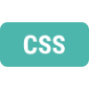
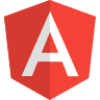

Olá, meu nome é Raoan! Tenho um grande interesse por tecnologia e estou sempre explorando novas tendências. Além disso, sou apaixonado por jogos e competições, indo da Formula 1, passando pelo futebol e indo até mesmo os E esports Sou um entusiasta
de carros, tanto pelo design quanto pela engenharia, e gosto de acompanhar as novidades do setor. Meu gosto musical é bastante eclético, abrangendo diversos gêneros, de um extremo a outro Além dessas paixões, gosto de me envolver em diversas
atividades, sempre buscando novos desafios e aprendizados. Sou uma pessoa dinâmica e versátil, com interesses que vão desde a tecnologia e entretenimento até o mundo automotivo e a música.
Porto União, SC, Brasil
27/10/2004
Carteira A e B
| Idiomas |
Explore este portfólio de uma nova perspectiva! Escolha um dos idiomas que falo para uma nova experiência.
| Tecnologias |
Ainda iniciante em Rust, estou aprendendo os fundamentos como tipos de dados, controle de fluxo e princípios de programação segura. Estou me familiarizando com conceitos como ownership, borrowing e lifetimes, que são centrais para a gestão
de memória em Rust. Praticando regularmente, estou dedicado a me tornar um desenvolvedor competente, aproveitando a performance e a segurança que Rust oferece.
Tenho um nível intermediário em JavaScript. Sou proficiente em ES6, manipulação do DOM e uso de frameworks como React e Node.js. Tenho experiência na criação de aplicações web dinâmicas e na implementação de funcionalidades interativas.
Continuo aprimorando minhas habilidades e explorando novas ferramentas e técnicas na linguagem.
Ainda iniciante em C++, estou aprendendo os fundamentos como tipos de dados, controle de fluxo e princípios de programação orientada a objetos. Estou me familiarizando com conceitos como ponteiros, referências, e gerenciamento de memória
dinâmica, que são centrais para a eficiência e flexibilidade em C++. Praticando regularmente, estou dedicado a me tornar um desenvolvedor competente, aproveitando a performance e a capacidade de baixo nível que C++ oferece.

Possuo habilidades avançadas em CSS, dominando técnicas como flexbox e grid para criar layouts responsivos e complexos. Tenho experiência em animações CSS, transformações 3D e uso eficiente de pseudo-classes e pseudo-elementos. Além disso,
utilizo pré-processadores como SASS/SCSS para um desenvolvimento CSS mais organizado e modular.
Possuo habilidades avançadas em SASS, utilizando eficientemente variáveis, mixins e funções para modularizar e organizar estilos CSS de forma escalável. Estou familiarizado com a criação de componentes reutilizáveis, uso avançado de aninhamento
e controle preciso sobre a geração de estilos através de SASS. Além disso, integro SASS com frameworks front-end e ferramentas de automação para otimizar o fluxo de desenvolvimento web.

Possuo um conhecimento intermediário em Angular, utilizando componentes, serviços e roteamento para desenvolver aplicações web dinâmicas. Estou familiarizado com a criação e consumo de APIs RESTful, assim como com o uso de RxJS para o
gerenciamento de fluxos de dados assíncronos. Além disso, tenho experiência básica em testes unitários com Jasmine e Karma, e estou focado em aprimorar minhas habilidades para construir aplicações mais complexas e robustas utilizando
o Angular.
Estou começando a aprender React, focando em componentes, props e estado básico. Estou explorando como construir interfaces dinâmicas com JSX e gerenciar eventos. Estou entusiasmado para progredir e dominar conceitos como hooks e gerenciamento
de estado avançado.
Tenho conhecimento intermediário em SQL, capaz de escrever consultas complexas usando operações básicas como SELECT, INSERT, UPDATE e DELETE, além de JOINs para combinar dados de diferentes tabelas. Estou focado em aprimorar minhas habilidades
em modelagem de banco de dados e otimização de consultas.
Estou familiarizado com o PostgreSQL, utilizando-o para gerenciar bancos de dados relacionais. Tenho experiência com a criação de tabelas, definição de esquemas, e escrita de consultas SQL para recuperar e manipular dados. Além disso,
estou explorando recursos avançados como índices, funções armazenadas e transações para melhorar a eficiência e integridade dos dados. Estou comprometido em expandir meu conhecimento em PostgreSQL para desenvolver soluções robustas
e escaláveis.
Estou começando a aprender MongoDB, explorando conceitos básicos como documentos, coleções e bancos de dados. Estou familiarizado com operações fundamentais como inserção, consulta, atualização e exclusão de documentos. Estou entusiasmado
para aprender mais sobre consultas avançadas, índices e como integrar MongoDB em aplicações para armazenamento e recuperação eficiente de dados não relacionais.
Utilizo o Ubuntu diariamente como meu sistema operacional principal em meu trabalho. Estou familiarizado com sua interface intuitiva baseada em GNOME, e uso eficientemente suas ferramentas integradas e aplicativos padrão. Utilizo o terminal
para realizar tarefas administrativas e de desenvolvimento, aproveitando a vasta comunidade e documentação para resolver problemas e aprender novas habilidades. Estou comprometido em explorar e utilizar recursos avançados do Ubuntu
para otimizar minha produtividade e experiência de usuário.
No passado, utilizei o Fedora como meu sistema operacional principal. Aproveitei sua interface baseada em GNOME e a confiabilidade das atualizações frequentes. Durante esse período, explorei suas capacidades para desenvolvimento e administração
de sistemas, utilizando o terminal para realizar tarefas variadas. A experiência me proporcionou um entendimento profundo das suas funcionalidades avançadas e me permitiu otimizar meu fluxo de trabalho de forma eficiente.
Atualmente, utilizo o Windows como meu sistema operacional principal. Além de sua interface familiar e robusta, que facilita a realização de uma ampla gama de tarefas pessoais e profissionais, aprecio também sua arquitetura bem desenvolvida.
A arquitetura de sistemas operacionais como o Windows envolve camadas de abstração que gerenciam recursos de hardware, oferecendo uma plataforma estável e confiável para desenvolvimento de software, gerenciamento de arquivos e execução
de aplicativos. Estou sempre interessado em entender mais profundamente como a arquitetura do sistema operacional influencia a experiência do usuário e a eficiência do trabalho diário.